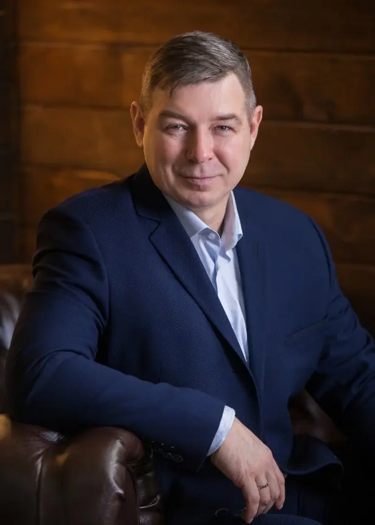

Програма навчання методистів ВЛГД за методом Бутейка
Коротко. Навчання методистів ВЛГД триває 2 місяці: 10 індивідуальних зустрічей у Zoom, Telegram або іншому месенджері, практична підготовка, стажування та підсумкова атестація. Навчатися можна з 18 років, профільна медична освіта для початку не обов’язкова. Вартість — 46 000 грн.

Професійна підготовка методистів ВЛГД за методом Бутейка з поглибленим вивченням фізіології дихання, теорії та практики методу, методики навчання інших людей, стажуванням і базовою підготовкою з популяризації методу.
Для кого це навчання
Навчання призначене для дорослих від 18 років.
Профільна медична, біологічна, педагогічна або фізкультурна освіта для початку навчання не є обов’язковою. Попередній досвід практики методу Бутейка також не потрібний — необхідні знання та практичні навички послідовно формуються під час програми. Водночас майбутньому методисту важливі відповідальність, готовність регулярно навчатися, практикувати метод самостійно та надалі постійно підвищувати свою кваліфікацію.
Як проходить навчання
Підготовка проходить індивідуально у Zoom, Telegram або іншому зручному месенджері.
Тривалість програми — 2 місяці.
До програми входять:
- 10 індивідуальних зустрічей;
- тривалість одного заняття — 30–60 хвилин;
- заняття орієнтовно 1 раз на тиждень;
- самостійне вивчення лекцій та методичних матеріалів;
- регулярні домашні завдання;
- перевірка засвоєння матеріалу;
- практична підготовка та стажування;
- підсумкова атестація.
Програма має загальну структуру, але темп навчання та окремі завдання можуть коригуватися індивідуально.
Програма підготовки
Теми лекцій:
- Історія відкриття методу ВЛГД, біографія К. П. Бутейка.
- Теорія методу Бутейка, її обґрунтування.
- Фізіологія дихання, закони газообміну, причини відхилення pH.
- Практика ВЛГД.
- Практика розслаблення. Активні та пасивні практики для нормалізації дихання.
- Дихання під час фізичних навантажень.
- Фактори, що посилюють дихання.
- Як викладати метод. Особливості роботи з пацієнтами.
- Обов’язки методиста.
- Метод Бутейка у світі, перспективи розвитку. Маркетинг.
Теоретична підготовка
Майбутній методист вивчає:
- фізіологію дихання;
- фізіологію газообміну;
- будову та функціонування органів дихання;
- фізіологію кислотно-лужного балансу;
- основні положення та теорію методу Бутейка;
- поняття надлишкової вентиляції;
- контрольну паузу та інші показники самоконтролю;
- глибокодихальну, або гіпервентиляційну, пробу Бутейка;
- історію та досвід застосування методу Бутейка;
- принципи формування фізіологічного дихального стереотипу;
- взаємозв’язок дихання, фізичного навантаження, розслаблення та функціонального стану організму.
Теоретична база підготовки методиста значно ширша, ніж під час звичайного індивідуального курсу для особистої практики.
Практична підготовка
Майбутній методист повинен не лише знати теорію, а й упевнено володіти методом особисто.
Під час навчання відпрацьовуються:
- контрольна пауза та оцінка її динаміки;
- контроль частоти пульсу;
- оцінка особливостей дихального стереотипу;
- навичка зменшення надлишкової вентиляції;
- вправи методу Бутейка;
- практики розслаблення;
- поступове ускладнення практики;
- робота з диханням у спокої та під час фізичної активності;
- оцінка самопочуття та динаміки функціональних симптомів;
- самостійна практика та регулярний самоконтроль.
Методист повинен підтримувати власну практику та демонструвати розуміння методу не лише теоретично, а й на особистому досвіді.
Список матеріалів
- Список хвороб глибокого дихання, редакція С. Г. Алтухова — 3 файли у форматі PDF.
- Книги:
2.1. «Відкриття доктора Бутейка». С. Г. Алтухов, 1 том — формат PDF.
2.2. «Водно-електролітні порушення». І. А. Савін, А. С. Горячев — формат PDF.
2.3. «Роль вуглекислого газу в регуляції обміну речовин». М. Ф. Гулий, Д. А. Мельничук — формат PDF.
2.4. «Як керується дихання людини». І. С. Бреслав — формат PDF.
2.5. «Кислотно-лужний баланс в інтенсивній терапії». С. С. Костюченко — формат PDF.
2.6. «Метод Бутейка. Досвід впровадження в медичну практику». К. П. Бутейко — формат PDF.
2.7. «Харчування за Бутейком». А. Г. Муллахметов — формат PDF.
2.8. В. Н. Соколенко. «Фізіологія системи дихання». - Курс «Метод Бутейка» — 18 відеоуроків у форматі MP4.
- Правила правої та лівої руки — 2 рисунки у форматі JPG.
- Презентація методиста — 22 файли у форматі PNG.
- Стаття проф. Г. Л. Апанасенка «Бути здоровим чи лікуватися: обирайте самі» — формат DOC.
- Таблиці, рисунки — 17 файлів у різних форматах.
- Теорія газообміну — лекція, відео у форматі MP4.
- Теорія pH — плейлист із 20 відео з посиланням на YouTube.
- Щоденник пацієнта — формат Google Таблиця.
- Фактори, що посилюють дихання — список, формат Google Документ.
- Курс «12 ступенів релаксу» — відео.
- Інтелект-карта про значення CO₂.
- Словник термінів — формат Google Документ.
- Інструкція ВЛГД К. П. Бутейка, 1984 рік — формат PDF.
- 10 презентацій до лекцій
Методика роботи з учасником
Окремий великий розділ підготовки присвячений тому, як навчати методу Бутейка інших людей.
Майбутній методист навчається:
- проводити першу зустріч;
- збирати необхідну інформацію про учасника;
- визначати вихідні показники;
- пояснювати основні принципи методу зрозумілою мовою;
- правильно демонструвати вправи;
- помічати та виправляти помилки;
- підбирати послідовність практики;
- давати домашні завдання;
- контролювати їх виконання;
- аналізувати динаміку;
- коригувати програму відповідно до індивідуальної ситуації;
- працювати зі складними випадками;
- навчати дорослих;
- навчати дітей за участю батьків;
- працювати з людьми, які мають суттєві обмеження стану здоров’я, у межах компетенції методиста та з урахуванням рекомендацій медичних фахівців.
Головне завдання методиста — не виконати вправу замість людини, а навчити її самостійно користуватися методом Бутейка.
Безпека та професійні межі
Методист повинен чітко розуміти межі своєї компетенції.
Під час підготовки окремо розглядаються питання безпеки та професійних дисклеймерів.
Методист:
- не встановлює медичних діагнозів;
- не призначає лікарські препарати;
- не скасовує призначень лікаря;
- не рекомендує самостійно змінювати медикаментозну терапію;
- за наявності захворювань рекомендує учаснику підтримувати зв’язок зі своїм лікарем;
- враховує стан людини та її здатність усвідомлено виконувати інструкції.
За наявності гострих станів, потреби в невідкладній медичній допомозі або інших обставин, що унеможливлюють безпечне навчання, дихальна практика не повинна замінювати необхідну медичну допомогу.
Домашня робота та самостійне навчання
Протягом двох місяців майбутній методист регулярно виконує домашні завдання.
До них входять:
- особиста практика;
- вивчення лекцій;
- робота з рекомендованими матеріалами;
- ведення конспекту;
- підготовка відповідей на контрольні питання;
- аналіз практичних ситуацій;
- підготовка до роботи з учасниками.
На індивідуальних зустрічах перевіряється, як засвоєний матеріал і як виконані завдання.
Стажування
Практична підготовка обов’язково включає стажування.
Майбутній методист проводить навчальну роботу під наглядом методиста-ревізора ВЛГД.
Під час стажування оцінюється:
- уміння спілкуватися з учасником;
- правильність пояснення методу;
- послідовність проведення заняття;
- уміння демонструвати вправи;
- здатність помічати помилки;
- уміння коригувати практику;
- здатність самостійно вести людину в межах програми навчання.
Основи маркетингу та популяризації методу
Методист повинен не лише володіти методом, а й уміти грамотно розповідати про нього людям.
Тому програма включає базову підготовку з маркетингу та комунікації:
- як зрозуміло представляти метод Бутейка;
- як розповідати про свою професійну діяльність;
- як створювати освітній контент;
- як використовувати соціальні мережі та інтернет;
- як формувати довіру до своєї роботи;
- як дотримуватися коректних формулювань у темах здоров’я;
- як популяризувати метод без необґрунтованих медичних обіцянок.
Атестація
Після завершення програми проводиться підсумкова атестація.
Іспит проходить у форматі особистої онлайн-зустрічі.
Кандидат може користуватися власним конспектом, який він вів протягом навчання.
Під час атестації методист-ревізор ставить питання з основних тем:
- теорії методу Бутейка;
- фізіології дихання;
- практики;
- оцінки показників;
- методики роботи з учасником;
- професійної безпеки та меж компетенції.
Якщо кандидат регулярно навчався, виконував завдання та уважно проходив програму, підсумкова атестація зазвичай не становить складності.
Диплом методиста ВЛГД
Після успішного завершення навчання та проходження атестації випускник отримує диплом методиста ВЛГД — вольової ліквідації глибокого дихання за методом Бутейка.
Диплом видається методистом-ревізором ВЛГД.
За запитом випускника диплом може бути оформлений іншою мовою.
Диплом не має встановленого строку дії. На цій сторінці також може бути представлений зразок диплома методиста.
Так виглядає диплом методиста ВЛГД, який видається після успішного завершення навчання та підтвердження кваліфікації.
За бажанням методиста диплом може бути оформлений українською, англійською або іншою мовою — за попереднім запитом.
Підтвердження кваліфікації
Після отримання диплома методист продовжує професійний розвиток. Щороку передбачається короткий звіт про практичну та професійну діяльність.
Також вітається:
- участь у спільних заходах методистів;
- професійні конференції;
- освітні та просвітницькі проєкти;
- співпраця з іншими методистами ВЛГД;
- вивчення нових наукових і професійних джерел;
- подальше профільне навчання у сферах медицини, біології, фізичної терапії, фізичної культури, педагогіки та суміжних дисциплін.
Професійна спільнота методистів
Після успішної атестації випускник приєднується до професійної групи «Методисти ВЛГД».
У групі Telegram методисти :
- отримують оновлення та нові навчальні матеріали;
- обмінюються професійним досвідом;
- обговорюють практичні питання;
- беруть участь у спільних проєктах;
- отримують інформацію про нові напрацювання та заходи.
Професійний зв’язок після завершення навчання підтримується постійно.
Реєстр методистів
Після успішної атестації випускник може бути внесений до реєстру методистів ВЛГД та представлений на відповідній сторінці сайту.
Це дозволяє підтвердити проходження підготовки та належність до професійної спільноти методистів.
Переглянути реєстр методистів ВЛГД →
Головний результат навчання
Після завершення програми методист повинен уміти самостійно навчити іншу людину методу Бутейка, контролювати правильність практики та оцінювати результати навчання.
На відміну від індивідуального оздоровчого курсу, підготовка методиста передбачає значно глибше вивчення фізіології, теорії методу, методики викладання, професійної практики та основ маркетингу.
Вартість навчання
Навчання методиста ВЛГД — 46 000 грн.
Можлива оплата частинами. Умови та графік платежів узгоджуються індивідуально.
Оплата приймається лише картками, емітованими банками України.
Якщо ваша картка випущена банком іншої країни, будь ласка, зв’яжіться з нами для отримання реквізитів для оплати: Контакти
ОПЛАТИТИ НАВЧАННЯ МЕТОДИСТА — 46 000 ГРН
Попередня консультація
Перед початком підготовки проводиться безкоштовна індивідуальна консультація.
Під час консультації можна:
- уточнити програму навчання;
- обговорити формат і графік;
- поставити питання щодо атестації;
- дізнатися про диплом та подальшу професійну діяльність;
- визначити, чи підходить вам ця програма.
Попередня консультація є рекомендованим першим кроком перед вступом на програму підготовки методистів.
Попередній запис на консультацію — безкоштовний. Після натискання кнопки ви перейдете в мій Telegram. Напишіть слово «Консультація», і я зв’яжуся з вами, щоб уточнити ваш запит та узгодити зручний час
Існує парадокс дихання, про який знають далеко не всі: якщо людина дихає надмірно глибоко і вентилює легені більше, ніж потрібно організму, це не обов’язково покращує доставку кисню до тканин.
Один із фізіологічних механізмів, пов’язаних із віддачею кисню гемоглобіном тканинам, описує ефект Бора.
Якщо ви хочете детальніше дізнатися про механізми дії методу Бутейка, його наукові основи, історію розвитку та застосування у світі, натисніть кнопку нижче.
Метод Бутейка: наукові основи, розвиток і застосування у світі
Реєстр випускників і відповіді на питання: стати методистом ВЛГД.